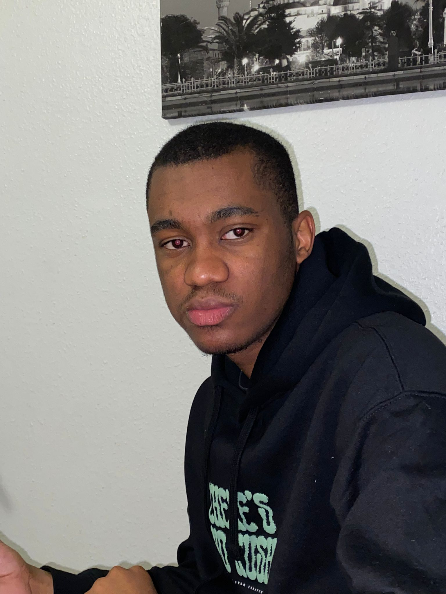

À propos de moi

Yo, je suis Nicolas MARRA. Je fais des photos, mais je ne suis pas
photographe!
J’ai commencé mon voyage photographique en 2022 en explorant la street photo et les paysages avec
mon fidèle Canon EOS 2000D. Je suis toujours à la recherche de nouvelles opportunités pour découvrir
et capturer la beauté du monde qui m'entoure.